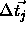
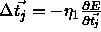
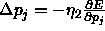
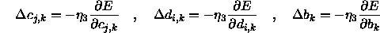
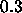
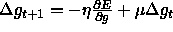
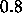
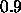
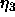

Because of the special activation functions used for radial basis functions, a special learning function is needed. It is impossible to train networks which use the activation functions Act_ RBF_ with backpropagation. The learning function for radial basis functions implemented here can only be applied if the neurons which use the special activation functions are forming the hidden layer of a three layer feedforward network. Also the neurons of the output layer have to pay attention to their bias for activation.
The name of the special learning function is RadialBasisLearning. The required parameters are:
 (centers): the learning rate used for the
modification
(centers): the learning rate used for the
modification 
of center vectors according to the formula
.
 (bias p): learning rate used for the modification
of the parameters p of the base function. p is stored as bias of
the hidden units and is trained by the following formula
(bias p): learning rate used for the modification
of the parameters p of the base function. p is stored as bias of
the hidden units and is trained by the following formula 
.
 (weights): learning rate which influences the
training of all link weights that are leading to the output layer as
well as the bias of all output neurons.
(weights): learning rate which influences the
training of all link weights that are leading to the output layer as
well as the bias of all output neurons.


.

. The momentum--term is usually chosen between
and
.
The learning rates  to
to

have to be selected very carefully. If the values are chosen too large (like the size of values for backpropagation) the modification of weights will be too extensive and the learning function will become unstable. Tests showed, that the learning procedure becomes more stable if only one of the three learning rates is set to a value bigger than 0. Most critical is the parameter bias (p), because the base functions are fundamentally changed by this parameter.Tests also showed that the learning function working in batch mode is much more stable than in online mode. Batch mode means that all changes become active not before all learning patterns have been presented once. This is also the training mode which is recommended in the literature about radial basis functions. The opposite of batch mode is known as online mode, where the weights are changed after the presentation of every single teaching pattern. Which mode is to be used can be defined during compilation of SNNS. The online mode is activated by defining the C macro RBF_INCR_LEARNING during compilation of the simulator kernel, while batch mode is the default.